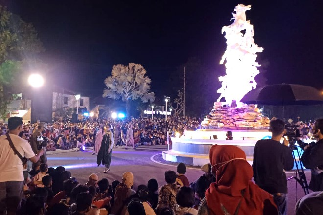
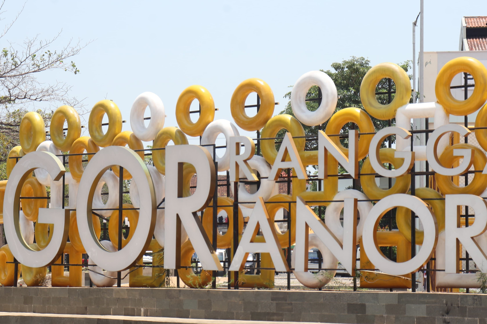
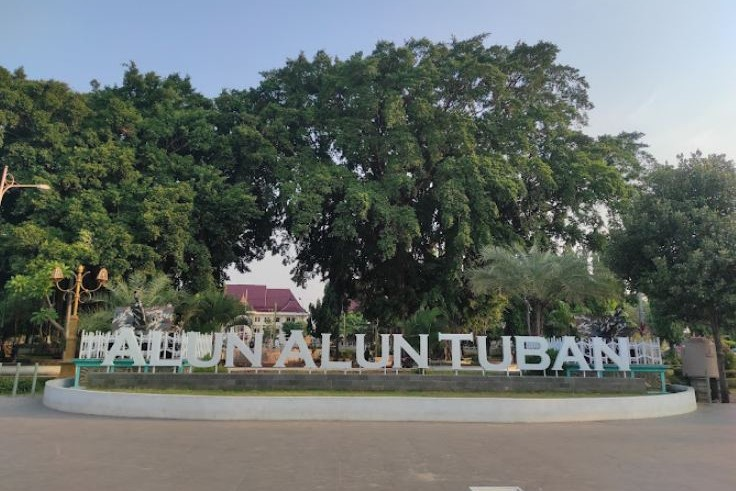
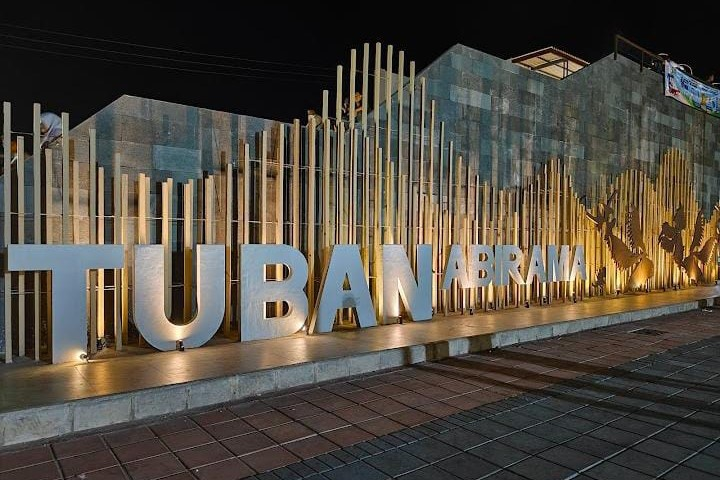
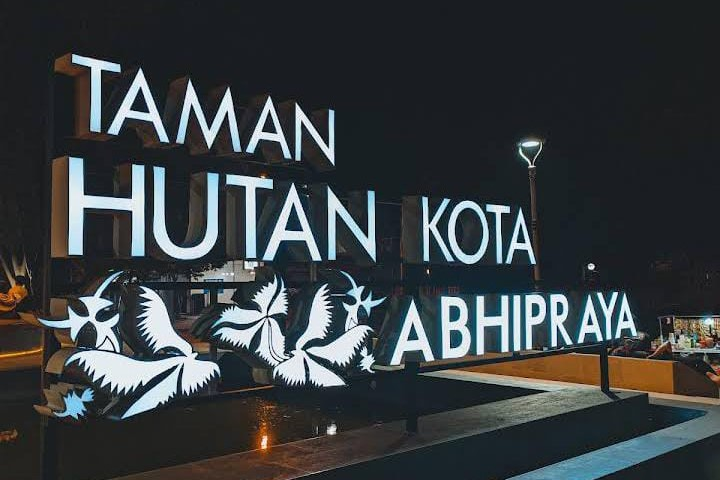

Taman Sleko Tuban
Tempat nongkrong yang asik dan ramah di kantong
Taman Sleko yang berada di Jalan Basuki Rahmat tepatnya di Kelurahan Kebonsari, Kecamatan/Kabupaten Tuban menjadi alternatif bagi masyarakat tempat nongkrong yang asik dan ramah di kantong
Bupati Tuban, Aditya Halindra Faridzky menjelaskan, makna yang Pertama, patung kuda memiliki arti kesetiaan. Kedua, patung kuda sebanyak 9 ekor menjadi wujud teamwork atau kerja sama dalam meraih capaian. Ketiga, patung kuda mewujudkan kekuatan yang memiliki arti semangat yang kuat untuk melakukan percepatan pembangunan pada berbagai bidang.
pembangunan kawasan Taman Sleko tersebut bertujuan untuk meningkatkan perekonomian masyarakat di Kabupaten Tuban dengan memaksimalkan UMKM yang ada. Selain itu Taman Sleko akan menjadi wahana ekspresi dan berkarya seni, baik musik, fashion show, tari, teater maupun kegiatan lainnya.
All Details

GOR Tuban
Tempat untuk berolahraga dan tempat bersantai
GOR (Gelanggang Olahraga) Rangga Jaya Anoraga, yang dibangun pada tahun 2023, kini menjadi salah satu destinasi favorit bagi warga Kabupaten Tuban. Selain sebagai tempat untuk berolahraga, GOR ini juga kerap dimanfaatkan sebagai lokasi rekreasi dan tempat bersantai. Fasilitas ini dirancang agar ramah bagi penyandang disabilitas, dengan adanya jalur khusus yang memudahkan akses mereka, sehingga seluruh warga dapat menikmati fasilitas publik ini dengan aman dan nyaman.
Selain itu, sebagai upaya untuk menjaga kebersihan dan keindahan kawasan, Pemerintah Kabupaten (Pemkab) Tuban telah menambah jumlah tempat sampah di berbagai titik. Langkah ini diharapkan dapat mengurangi kebiasaan membuang sampah sembarangan, serta mengajak masyarakat untuk berpartisipasi aktif dalam menjaga lingkungan GOR yang bersih dan nyaman.
All Details

Alun-Alun Tuban
Ruang Publik yang Asri dan Bersejarah
Alun-Alun Kota Tuban: Ruang Publik yang Asri dan Bersejarah
Alun-Alun Kota Tuban merupakan pusat aktivitas masyarakat yang menawarkan suasana sejuk dengan hamparan rumput hijau dan pepohonan rindang. Terletak di jantung kota dan dikelilingi bangunan bersejarah, seperti Masjid Agung Tuban, alun-alun ini menjadi tempat favorit untuk bersantai, berolahraga, maupun menghabiskan waktu bersama keluarga.
Dengan pencahayaan yang indah di malam hari, alun-alun semakin hidup dan nyaman bagi pengunjung. Sebagai simbol kebersamaan dan pusat kehidupan sosial, Alun-Alun Kota Tuban mencerminkan harmoni antara tradisi dan modernitas.
All Details

Abhirama
Pusat oleh-oleh khas Tuban dengan tampilan yang megah dan indah
Tuban Abirama, yang sebelumnya berfungsi sebagai rest area bagi para wisatawan, kini telah disulap menjadi pusat oleh-oleh khas Tuban dengan tampilan yang megah dan indah. Bupati Tuban, Aditya Halindra Faridzky, SE., meresmikan Tuban Abirama pada Jumat (05/04), dalam sebuah acara yang semakin khidmat dengan penyerahan santunan kepada 2.000 anak yatim di Kabupaten Tuban. Santunan tersebut merupakan hasil kolaborasi antara Baznas Jawa Timur dan Baznas Tuban.
Selain itu, sejumlah bantuan juga diberikan kepada seniman Jawa Timur dan Tenaga Kesejahteraan Sosial Kecamatan (TKSK).
Dalam kesempatan tersebut, Bupati Tuban, yang akrab disapa Mas Lindra, menjelaskan bahwa nama "Abirama" diambil dari bahasa Sanskerta yang berarti selaras, serasi, dan berkesinambungan. Makna selaras dan serasi mencerminkan pembangunan Kabupaten Tuban yang dijalankan dengan semangat kolaborasi dan sinergi, sementara berkesinambungan menunjukkan bahwa pembangunan yang dilakukan saat ini merupakan kelanjutan dari keberhasilan sebelumnya, yang terus ditingkatkan. "Saya dedikasikan Tuban Abirama untuk masyarakat Kabupaten Tuban," ungkapnya.
Lokasi pembangunan Tuban Abirama yang dekat dengan laut juga mencerminkan karakter masyarakat Tuban yang berpikiran luas dan berwawasan ke depan. Bupati berharap bahwa Tuban Abirama dapat membawa manfaat yang sebesar-besarnya bagi masyarakat Kabupaten Tuban.
All Details

Abhipraya
Area bermain anak, lapangan terbuka, serta spot-spot foto menarik
Taman Hutan Kota Abhipraya kini menjadi pusat perhatian dengan beragam fasilitas yang ditawarkannya. Taman ini dilengkapi dengan area bermain anak, lapangan terbuka, serta spot-spot foto menarik, menjadikannya destinasi favorit bagi warga Tuban untuk bersantai dan melepas penat.
Salah satu daya tarik utama taman ini adalah area yang luas dan hijau, menciptakan suasana sejuk dan nyaman bagi pengunjung. Taman ini juga ramah keluarga, dengan playground yang dirancang khusus agar anak-anak dapat bermain dengan aman dan nyaman.
Lapangan terbuka di taman ini sering dimanfaatkan untuk berbagai kegiatan olahraga dan rekreasi. Suasana yang dulunya gelap dan sepi di sekitar area taman kini telah berubah berkat pencahayaan yang optimal, menciptakan atmosfer yang lebih hidup dan ramai.
Selain itu, taman ini menyediakan tempat parkir yang luas dan gratis, sehingga memudahkan pengunjung dalam memarkir kendaraan mereka. Desain keseluruhan taman yang terencana dengan baik, lengkap dengan banyak tempat duduk di berbagai sudut, memungkinkan pengunjung bersantai dan menikmati keindahan alam bersama keluarga maupun teman.
All Details